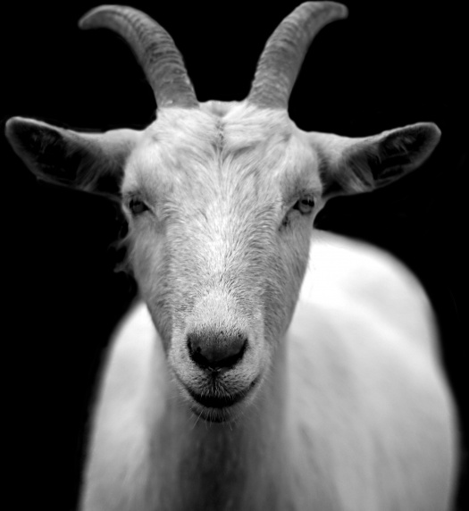

Goat
The domestic goat is a subspecies of goat domesticated from the wild goat of southwest Asia and Eastern Europe.
- Scientific name : Capra aegagrus hircus
- Breeds : They are generally distributed in those used for dairy, fiber, meat, skins, and as companion animals. Some breeds are also particularly noted as pack goats.
- Land clearing : Goats have been used by humans to clear unwanted vegetation for centuries. They have been described as "eating machines" and "biological control agents"
- Meat : It can be prepared in a variety of ways, including stewing, baking, grilling, barbecuing, canning, and frying;
Historically, goat hide has been used for water and wine bottles in both traveling and transporting wine for sale.